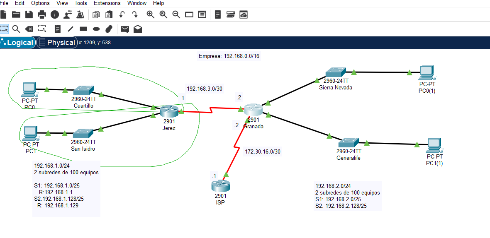

Enrutamiento estatico
Ejemplo:

Comandos config routing
ANTES QUE TODO: ANOTAR LAS SUBREDES Y LAS DIRECCIONES IPs DE CADA LAN.
En el router izquierdo (Jerez) configurar las interfaces gigabit según su correspondiente LAN
Jerez Router>ena
Jerez Router#conf terminal
Jerez Router(config)#hostname Jerez
Jerez Jerez(config)#interface gigabitEthernet 0/0
Jerez Jerez(config-if)#ip address 192.168.1.1 255.255.255.128
Jerez Jerez(config-if)#description LAN Cuartillo
Jerez Jerez(config-if)#no shutdown
Jerez Jerez(config-if)#interface gigabitEthernet 0/1
Jerez Jerez(config-if)#ip address 192.168.1.129 255.255.255.128
Jerez Jerez(config-if)#description LAN San Isidro
Jerez Jerez(config-if)#no shutdown
Jerez Jerez(config-if)#end
Jerez Jerez#sh run
Jerez Jerez#sh ip route
Probamos algunos Ping hacia los host de las 2 LANs para comprobar la configuración
Jerez Jerez#ping 192.168.1.2
Jerez Jerez#ping 192.168.1.130
Jerez Jerez#sh ip route
A continuación, configuramos el router derecho (Granada)
Granada Router>ena
Granada Router#conf ter
Granada Router(config)#hostname Granada
Granada Granada(config)#interface gigabitEthernet 0/0
Granada Granada(config-if)#description Sierra Nevada
Granada Granada(config-if)#ip address 192.168.2.1 255.255.255.128
Granada Granada(config-if)#no shutdown
Granada Granada(config-if)#interface gigabitEthernet 0/1
Granada Granada(config-if)#description Generalife
Granada Granada(config-if)#ip address 192.168.2.129 255.255.255.128
Granada Granada(config-if)#no shutdown
Granada Granada(config-if)#end
Granada Granada#sh running-config
Granada Granada#sh ip route
Ahora es el turno de la LAN entre los dos routers (el enlace punto a punto). Tenemos que configurar los dos extremos, uno en el router de Jerez y el otro en el de Granada
Jerez Jerez#conf terminal
Jerez Jerez(config)#interface serial 0/0/0
Jerez Jerez(config-if)#ip address 192.168.3.1 255.255.255.252
Jerez Jerez(config-if)#description Serial Jerez<->Granada
Jerez Jerez(config-if)#no shutdown
Jerez Jerez(config-if)#end
Jerez Jerez#sh running-config
Granada Granada#conf terminal
Granada Granada(config)#interface serial 0/0/0
Granada Granada(config-if)#ip address 192.168.3.2 255.255.255.252
Granada Granada(config-if)#description Serial Granada-Jerez
Granada Granada(config-if)#no shutdown
Granada Granada(config-if)#end
Granada Granada#sh ip route
Ping al router de Granada
Jerez Jerez#ping 192.168.3.2
Jerez Jerez#sh ip route
Ping a uno de lo hosts de una LAN de Granada
Jerez Jerez#ping 192.168.2.1
Jerez Jerez#sh ip route
Especificamos la ruta estatica para llegar desde la LAN de Jerez hasta la LAN de Granada
Jerez Jerez>enable
Jerez Jerez#conf terminal
Jerez Jerez(config)#ip route ?
Jerez Jerez(config)#ip route 192.168.2.0 ?
Jerez Jerez(config)#ip route 192.168.2.0 255.255.255.128
Jerez Jerez(config)#ip route 192.168.2.0 255.255.255.128 ?
Jerez Jerez(config)#ip route 192.168.2.0 255.255.255.128 192.168.3.2
Jerez Jerez(config)#end
Jerez Jerez#sh ip route
Jerez Jerez#conf terminal
Jerez Jerez#sh ip route static
Jerez Jerez#sh ip route connected
Especificamos, esta vez, la ruta desde la LAN de Granada hasta Jerez
Granada Granada>ena
Granada Granada#conf ter
Granada Granada(config)#ip route ?
Granada Granada(config)#ip route 192.168.1.0 255.255.
Granada Granada(config)#ip route 192.168.1.0 255.255.255.0 192.168.3.1
Granada Granada(config)#end
Granada Granada#sh ip route
Granada Granada>ena
Una vez configurada la red interna de la empresa, toca ahora configurar la salida al exterior (al ISP) dando una IP al interfaz de salida del router (en este caso, es Granada)
Granada Granada#conf ter
Granada Granada(config)#interface serial 0/0/1
Granada Granada(config-if)#ip address 172.30.16.2 255.255.255.252
Granada Granada(config-if)#description serial to ISP
Granada Granada(config-if)#no shutdown
Granada Granada(config-if)#end
Granada Granada#sh ip route
Configuramos lógicamente, el interfaz del ISP que conecta al exterior con la empresa
ISP Router>ena
ISP Router#conf terminal
ISP Router(config)#hostname ISP
ISP ISP(config)#interface serial 0/0/1
ISP ISP(config-if)#ip address 172.30.16.1 255.255.255.252
ISP ISP(config-if)#description serial to ASIR empresa
ISP ISP(config-if)#no shutdown
ISP ISP(config-if)#exit
Configuramos dos interfaces de loopback como ejemplo
ISP ISP(config)#interface loopback 1
ISP ISP(config-if)#ip address 193.147.162.1 255.255.255.0
ISP ISP(config-if)#interface loopback 2
ISP ISP(config-if)#ip address 8.8.8.8 255.255.255.0
ISP ISP(config-if)#end
ISP ISP#sh run
ISP ISP#ping 8.8.8.8
Por último, debemos configurar la ruta por defecto. Los routers mandan por esta ruta los paquetes con IPs que no se conozcan en la red interna. Esta ruta se configura en todos los routers de la red interna, con el objetivo de que sepan por qué camino mandar los paquetes con rutas desconocidas para ellos.
Granada Granada#conf ter
Granada Granada(config)#ip route 0.0.0.0 0.0.0.0 serial 0/0/1 //Es recomendable poner la ruta del siguiente salto en lugar del interfaz
Granada Granada#sh ip route
En el caso de Jerez, la ruta por defecto es la ruta hacia granada, pues es granada el router que conecta con el exterior
Jerez Jerez>ena
Jerez Jerez#sh ip route
Jerez Jerez#conf ter
Jerez Jerez(config)#ip route 0.0.0.0 0.0.0.0 192.168.3.2
Jerez Jerez(config)#end
Jerez Jerez#sh ip route
Jerez Jerez#conf ter
Jerez Jerez(config)#no ip route 0.0.0.0 0.0.0.0 192.168.3.2
Jerez Jerez(config)#ip route 0.0.0.0 0.0.0.0 192.168.3.2
Además, podemos agrupar direcciones para simplificar el enrutamiento desde el exterior a la empresa. En este caso, la empresa tenía un espacio de direcciones de /16 (255.255.0.0); por tanto todos los paquetes que tienen un 192.168.x.x, el ISP los manda por la IP 172.30.16.2, que es la IP que conecta el ISP con el router frontera (granada)
ISP ISP#sh ip route
ISP ISP#conf ter
ISP ISP(config)#ip route 192.168.0.0 255.255.0.0 172.30.16.2
ISP ISP(config)#sh ip route
ISP ISP(config)#end
ISP ISP#sh ip route
ISP ISP#sh ip route connected
ISP ISP#sh run
Esta parte, a priori, puede no tener sentido, ¿ Por qué quita las rutas de las LAN de Granada ( 192.168.2.0/128) ? Si lo pensamos bien, todas la rutas de las LANs de Jerez, tanto sean conocidas como si no, se deben mandar al router de Granada, es por ello que podemos quitarlas sin problemas.
Jerez Jerez(config)#end
Jerez Jerez#sh ip route
Jerez Jerez#sh ip route static
Jerez Jerez#conf terminal
Jerez Jerez(config)#end
Jerez Jerez#sh run
Jerez Jerez#conf ter
Jerez Jerez(config)#no ip route 192.168.2.0 255.255.255.128 192.168.3.2
Jerez Jerez(config)#no ip route 192.168.2.128 255.255.255.128 192.168.3.2
Jerez Jerez(config)#end
Jerez Jerez#sh ip route static